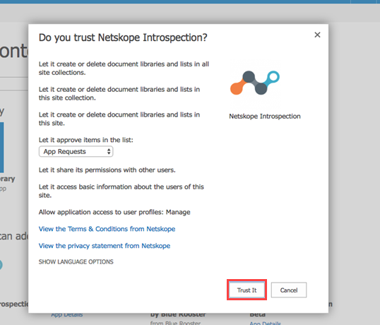

Install the Netskope Introspection v2 App
After you have created an app catalog and added the administrator to the site collection administrators of the app catalog, you can install the Netskope Introspection v2 app.
To install the app:
Download the Netskope Introspection v2 app from here.
Note
You will need a support login to access the link. If you do not have one, contact your sales representative or Netskope support.
Log in to admin.microsoft.com as a global administrator.
Navigate to Admin > Admin centers > SharePoint.
On the left navigation pane of the SharePoint Admin Center page, click More features.
Under Apps, click Open.
On the Apps page, click App Catalog.
On the left navigation pane, click Apps for SharePoint and then click Upload.
Click Choose Files and select the Netskope_Introspection_v2.app file and click OK.
The Upload completed (1 added) message should appear once you have successfully uploaded the file.
On the left navigation pane, click Site contents.
On the Site contents page, click the + New drop-down list and select App.
On the top-right, click My requests.
The browser will prompt you to open the page in classic experience.
Click Open in the classic experience.
On the Site contents page, navigate to Your Apps > From Your Organization.
Click App Details under the Netskope Introspection app.
On the app details page, the ADD IT button may be disabled. Click Request Approval, enter a justification, and click Request.
When you click Request, an automated email is sent to the site collection administrator of the app catalog.
Note
If the ADD IT button is enabled, skip steps 15-20 and proceed to step 21.
Access the Outlook account of the site collection administrator and in the auto-generated email that you received for the request, click You can now approve or reject the request here.
On the Approve or Reject App Request screen, in the Comments box, provide relevant information about your decision and click Approve.
Navigate back to Site contents page, click add an app.
On the left navigation pane, navigate to Your Apps > From Your Organization.
You can view the Netskope Introspection app. Click App Details under the Netskope Introspection app icon.
In the Netskope Introspection app details page, click ADD IT.
In the Do you trust <...>? pop-up window, keep the configuration as is and click Trust It.

After the installation, the Netskope Introspection v2 app appears under Site contents. You should verify that the installation is successful. Follow the instructions described here.